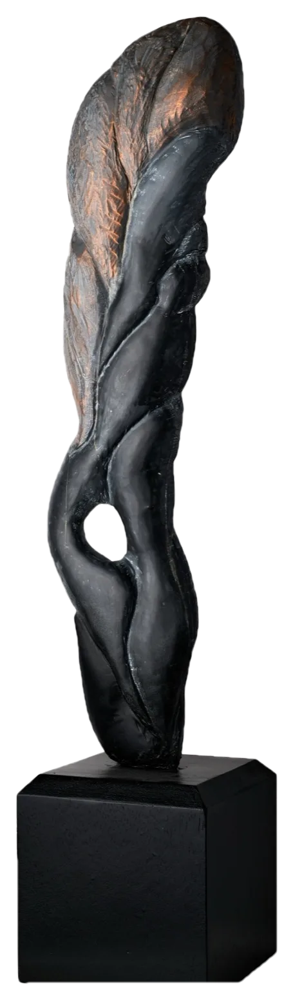

Bronze
12 œuvres
Façonnées en plâtre puis fondues en bronze par les fonderies Chapon et Avangini, le plus souvent en tirages numérotés.
Entrer dans la salle BronzeSculptures en ardoise taillée, en bronze et en pneu recyclé. Mi-figuratives, mi-abstraites, elles naissent dans l’atelier de Bagnolet.

HarmonieArdoise, H 70 cm (base 15 × 15 cm)
900 €

D’une multitude de mystères, au milieu de la poussière de l’atelier, je tente sans cesse de révéler LA forme. Celle que je portais à mon insu ? Celle qui était enfouie dans la matière ? Peu importe, ce sera celle qui émergera de toutes mes sensations de l’instant présent.
Mi-figuratif, mi-abstrait, mon art voyage entre les deux. Dans les courbes et les déliés naissent des visages, des corps, des sensations, des mouvements, des rythmes.
Au commencement est l’indécision. Je cherche une trace, une empreinte, un repère, une mémoire dans la matière, un indice…
Je reconnais un œil, un dos, une vertèbre, l’esquisse d’une ossature, d’une construction, d’un mouvement… En réalité je reconnais le début d’une âme (de mon âme ?), le début d’une structure, le début d’une œuvre.
Texte de Laure Polin.
12 œuvres
Façonnées en plâtre puis fondues en bronze par les fonderies Chapon et Avangini, le plus souvent en tirages numérotés.
Entrer dans la salle Bronze21 œuvres
Taille directe : l’ardoise est polie, cirée, parfois rehaussée à la cire dorée, puis posée sur un socle de bois, de pierre ou de métal.
Entrer dans la salle Ardoise16 œuvres
Pneus et chambres à air recyclés, découpés puis assemblés, parfois avec une pièce d’ardoise ou de bronze.
Entrer dans la salle PneuUne sélection d’œuvres disponibles. Chaque pièce est unique ou tirée en exemplaires numérotés ; Laure Polin envoie d’autres photos sur demande.
« L’ardoisier est un arbre. Au bout de ses branches poussent des fruits particuliers, des sculptures d’ardoise. »
Des ardoises de 20 à 40 cm, sur socle de bois, de marbre ou de plexiglas.
60 œuvres ont déjà rejoint des collections particulières. Elles restent visibles ici.


Une conversation entre deux femmes artistes : l’une sculpte, l’autre écrit.
35 €
51 rue Lénine, 93170 Bagnolet. Visites : modalités et horaires à compléter
Laure Polin en est artiste permanente ; ses sculptures y sont aussi en vente.
Œuvres présentées sur la plateforme d’art contemporain en ligne.
Du 31 octobre au 2 novembre 2025, Centre de congrès Les Atlantes, Les Sables-d’Olonne.
Dates, lieux et liens de billetterie à compléter

Une question sur une œuvre, d’autres photos, un tarif, une commande ou une visite : Laure Polin répond elle-même.
Horaires de l’atelier à compléter